Lab10_Finite State Machines
Introduction
Finite State Machines (FSM) are sequential circuits used in many digital systems to control the behavior of systems and dataflow paths. Examples of FSM include control units and sequencers. This lab introduces the concept of two types of FSMs, Mealy and Moore, and the modeling styles to develop such machines.
Mealy FSM
A finite-state machine (FSM) or a state machine designs computer programs and sequential logic circuits. It is conceived as an abstract machine that can be in one of a finite number of user-defined states. The machine is in only one state at a time; the state it is in at any given time is called the current state. It can change from one state to another when initiated by a triggering event or condition; this is called a transition. A particular FSM is defined by a list of its states and the triggering condition for each transition.
The behavior of state machines can be observed in many devices in modern society performing a predetermined sequence of actions depending on the sequence of events with which they are presented. Simple examples are vending machines which dispense products when the proper combination of coins are deposited, elevators which drop riders off at upper floors before going down, traffic lights which change sequence when cars are waiting, and combination locks, which require the input of combination numbers in the proper order.
The state machines are modeled using two basic types of sequential networks- Mealy and Moore. In a The mealy machine’s output depends on the present (current) state and the present (current) inputs. In Moore’s machine, the output depends only on the present state.
A general model of a Mealy sequential machine consists of a combinatorial network, which generates the outputs and the next state, and a state register, which holds the present state, as shown below. The state register is normally modeled as D flip-flops. The state register must be sensitive to a clock edge. The other block(s) can be modeled either using the always procedural block or a mixture of the always procedural block and dataflow modeling statements; the always procedural block will have to be sensitive to all inputs being read into the block and must have all output defined for every branch to model it as a combinatorial block. The two blocks of the Mealy machine can be viewed as
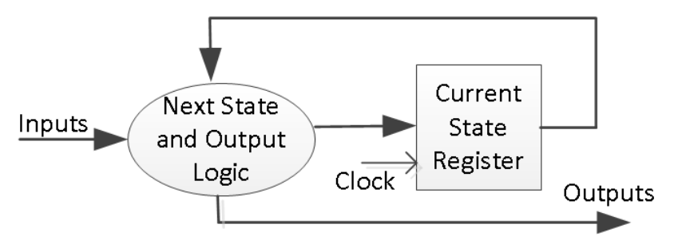
Here is the state diagram of a parity checker Mealy machine and the associated model.
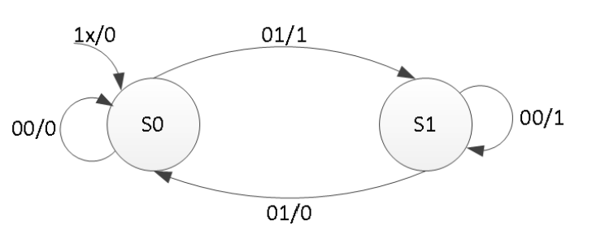
module mealy_2processes(
input clk, // Clock input for synchronous logic
input reset, // Asynchronous reset input, resets the machine state
input x, // Input signal to the Mealy machine
output reg parity // Output signal from the Mealy machine represents parity
);
reg state, nextstate; // 'state' holds the current state, 'next state' for the next state after the clock edge
parameter S0 = 0, S1 = 1; // Define state encoding for readability: S0 and S1 represent the states
// Sequential logic block: updates the current state at the rising edge of a clock or reset
always @(posedge clk or posedge reset)
if (reset)
state <= S0; // If reset is high, force state to S0
else
state <= nextstate; // Else, transition to next state
// Combinatorial logic block: computes the next state and the output based on the current state and input
always @(state or x)
begin
parity = 1'b0; // Default output for parity, assume it's 0 unless set to 1 below
case(state) // Switch between states
S0: if(x)
begin
parity = 1; nextstate = S1; // If in state S0 and x is 1, set parity to 1 and move to state S1
end
else
nextstate = S0; // If in state S0 and x is 0, stay in state S0
S1: if(x)
nextstate = S0; // If in state S1 and x is 1, move to state S0
else
begin
parity = 1; nextstate = S1; // If in state S1 and x is 0, set parity to 1 and stay in state S1
end
default:
nextstate = S0; // Default case for safety, should not be reached in proper operation
endcase
end
endmodule
The state assignments can be one-hot, binary, gray-code, or other types. Usually, the synthesis tool will determine the type of the state assignment, but the user can also force a particular type by changing the synthesis property as shown below. The state assignment type will have an impact on the number of bits used in the state register; one-hot encoding using the maximum number of bits but decodes very fast to Compact (binary) encoding uses the smallest number of bits but takes longer to decode.
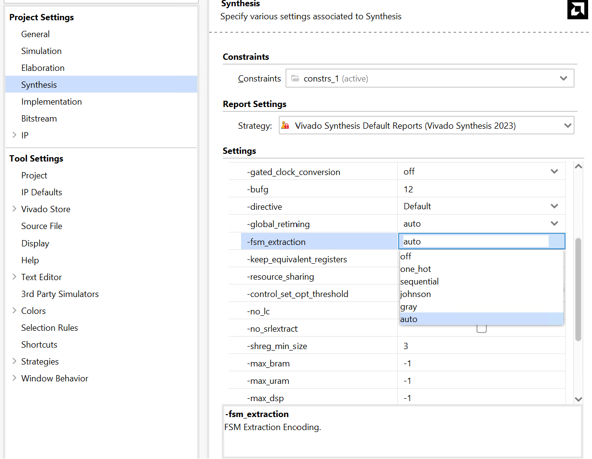
Part10-1-1
Design a sequence detector implementing a Mealy state machine using three always blocks. The Mealy state machine has one input (ain) and one output (yout). The output yout is one if and only if the total number of 1s received is divisible by 3 (hint: 0 is inclusive; however, reset cycle(s) do not count as 0- see in simulation waveform time=200). Develop a testbench and verify the model through a behavioral simulation.
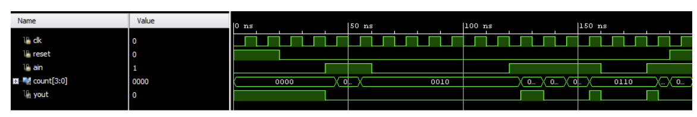
lab10_1_1.v
// Mealy state machine for detecting sequences where the number of 1's is divisible by 3.
module sequence_detector_mealy (
input wire clk, // Clock input
input wire reset, // Asynchronous reset
input wire ain, // Input signal
output reg yout, // Output signal (1 when the total number of '1's is divisible by 3)
output reg [3:0] count // Counter for the number of '1's received
);
// State encoding
localparam S0 = 2'b00, S1 = 2'b01, S2 = 2'b10;
// Current and next state variables
reg [1:0] current_state, next_state;
// Sequential logic for state updating and counter
always @(posedge clk or posedge reset) begin
if (reset) begin
current_state <= S0;
count <= 0; // Reset count when the system is reset
end else begin
current_state <= next_state;
if (ain) count <= count + 1; // Increment count with each '1' received
end
end
// Combinational logic for next state and output
always @(*) begin
// Default conditions
next_state = current_state;
yout = 1'b0;
case (current_state)
S0: begin
if (ain) next_state = S1;
end
S1: begin
if (ain) next_state = S2;
end
S2: begin
if (ain) next_state = S0;
end
endcase
// Output logic for Mealy machine: 'yout' is '1' when the number of '1's is divisible by 3
if (count % 3 == 0 && ain) yout = 1'b1;
end
endmodule
tb.v
// Testbench for the sequence detector
module tb_sequence_detector_mealy();
reg clk, reset, ain;
wire yout;
wire [3:0] count;
// Instantiate the sequence detector
sequence_detector_mealy UUT (
.clk(clk),
.reset(reset),
.ain(ain),
.yout(yout),
.count(count)
);
// Clock generation
initial begin
clk = 0;
forever #10 clk = ~clk; // Clock with period 20 units
end
// Stimulus
initial begin
// Initialize
reset = 1; ain = 0;
#40; // Apply reset
reset = 0; // Release reset
ain = 1;
#40;
ain = 0;
#60;
ain = 1;
#80;
ain = 0;
#40; // Wait more before ending simulation
$finish;
end
// Monitoring
initial begin
$monitor("Time=%g, reset=%b, ain=%b, yout=%b, count=%d", $time, reset, ain, yout, count);
end
endmodule
We can run a Simulation to check the code by clicking the Run Simulation under the SIMULATION and choosing the first Run Behavioral Simulation.
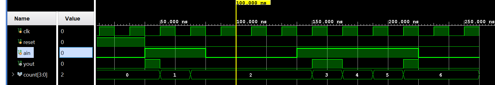
Moore FSM
A general model of a Moore sequential machine is shown below. Its output is generated from the state register block. The next state is determined using the present (current) input and the present (current) state. Here, the state register is also modeled using D flip-flops. Normally, Moore machines are described using three blocks, one of which must be sequential, and the other two can be modeled using always blocks or a combination of always and dataflow modeling constructs.
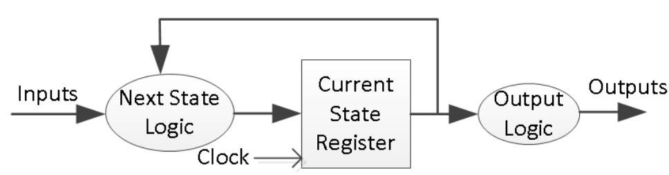
Here is the state graph of the same parity checker to be modeled as a Moore machine. The associate model is shown below.
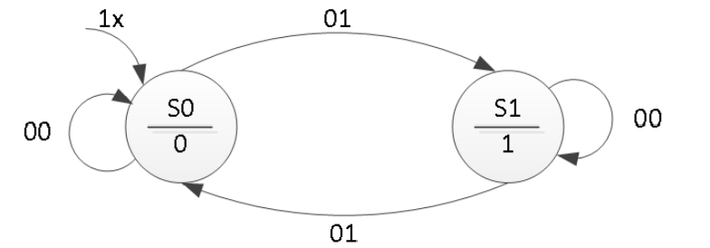
module moore_3processes(
input clk, // Clock signal
input reset, // Reset signal
input x, // Input signal
output reg parity // Output signal
);
// State and next state declaration
reg state, nextstate;
// State definition using parameters for readability
parameter S0 = 0, S1 = 1;
// Sequential always block for state updating
// This block responds to the clock's positive edge or the reset's positive edge.
always @(posedge clk or posedge reset) begin
if (reset)
state <= S0; // On reset, go to state S0
else
state <= nextstate; // On the clock, move to the next state
end
// Combinational always block to determine the output based on the current state
// This is specific to Moore machines where output only depends on the state
always @(state) begin
case(state)
S0: parity = 0; // In state S0, set parity to 0
S1: parity = 1; // In state S1, set parity to 1
endcase
end
// Combinational always blocks to compute the next state based on the current state and input
always @(state or x) begin
nextstate = S0; // Default next state is S0
case(state)
S0: if(x)
nextstate = S1; // In state S0, move to S1 if x is 1
S1: if(!x)
nextstate = S1; // In state S1, stay in S1 if x is 0
// Default condition can be added if required
endcase
end
endmodule
The output block, when it is simple, as in this example, can be modeled using dataflow modeling constructs. The following code can be used instead of the always block. You also need to change the output type from reg to wire.
assign parity = (state==S0) ? 1'b0: 1'b1;
Part10-2-1
Design a sequence detector implementing a Moore state machine using three always blocks. The Moore state machine has two inputs (ain[1:0]) and one output (yout). The output yout begins as 0 and remains a constant value unless one of the following input sequences occurs: (i) The input sequence ain[1:0] = 01, 00 causes the output to become 0 (ii) The input sequence ain[1:0] = 11, 00 causes the output to become 1 (iii) The input sequence ain[1:0] = 10, 00 causes the output to toggle. Develop a testbench (similar to the waveform shown below) and verify the model through a behavioral simulation.
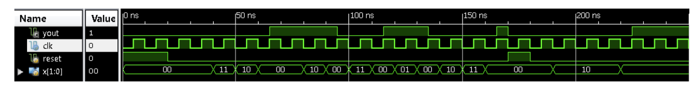
lab10_2_1.v
// This module implements a Moore sequence detector. The sequence detector monitors
// the input 'ain' for specific patterns and changes the output 'yout' accordingly.
// The specific patterns detected are:
// 1. Sequence 01 followed by 00 sets 'yout' to 0.
// 2. Sequence 11 followed by 00 sets 'yout' to 1.
// 3. Sequence 10 followed by 00 toggles 'yout'.
module moore_sequence_detector(
input wire clk, // Clock signal for synchronizing the state transitions.
input wire reset, // Asynchronous reset signal to initialize the state machine.
input wire [1:0] ain, // 2-bit input signal for detecting patterns.
output reg yout // Output signal that changes based on detected sequences.
);
// Define state codes using local parameters for readability.
localparam [2:0]
IDLE = 3'b000, // Idle state, waiting for a sequence to start.
SEQ_01 = 3'b001, // Not used, as detection happens in WAIT_00_FROM_* states.
SEQ_11 = 3'b010, // Not used, as detection happens in WAIT_00_FROM_* states.
SEQ_10 = 3'b011, // Not used, as detection happens in WAIT_00_FROM_* states.
WAIT_00_FROM_01 = 3'b100, // State indicating 01 has been detected, waiting for 00.
WAIT_00_FROM_11 = 3'b101, // State indicating 11 has been detected, waiting for 00.
WAIT_00_FROM_10 = 3'b110; // State indicating 10 has been detected, waiting for 00.
// Registers are used to hold the current and next state of the state machine.
reg [2:0] current_state, next_state;
// Sequential logic block for state transition.
// On each positive clock edge or when reset is asserted, the state machine updates its current state.
always @(posedge clk or posedge reset) begin
if (reset)
current_state <= IDLE; // On reset, initialize to IDLE state.
else
current_state <= next_state; // Otherwise, transition to the next state.
end
// Combinational logic block to determine the next state based on the current state and input signals.
always @(*) begin
case (current_state)
IDLE: // In the IDLE state, check the input to determine which sequence might be starting.
case (ain)
2'b01: next_state = WAIT_00_FROM_01; // If input is 01, move to WAIT_00_FROM_01 state.
2'b11: next_state = WAIT_00_FROM_11; // If input is 11, move to WAIT_00_FROM_11 state.
2'b10: next_state = WAIT_00_FROM_10; // If input is 10, move to WAIT_00_FROM_10 state.
default: next_state = IDLE; // For any other input, remain in IDLE.
endcase
// In WAIT_00_FROM_* states, transition back to IDLE upon receiving 00, staying otherwise.
WAIT_00_FROM_01: next_state = (ain == 2'b00) ? IDLE : WAIT_00_FROM_01;
WAIT_00_FROM_11: next_state = (ain == 2'b00) ? IDLE : WAIT_00_FROM_11;
WAIT_00_FROM_10: next_state = (ain == 2'b00) ? IDLE : WAIT_00_FROM_10;
default: next_state = IDLE; // Fallback to IDLE for undefined states.
endcase
end
// Output logic to update 'yout' based on the current state and detected sequences.
// This block ensures that the output changes only at specific points in the sequence.
always @(posedge clk) begin
if (reset)
yout <= 0; // Reset output to 0.
else
case (current_state)
// Set 'yout' based on the specific sequence detected and completed.
WAIT_00_FROM_01: yout <= 0; // Sequence 01, 00 detected.
WAIT_00_FROM_11: yout <= 1; // Sequence 11, 00 detected.
WAIT_00_FROM_10: yout <= ~yout; // Sequence 10, 00 detected, toggle output.
default: yout <= yout; // No change in output for other states.
endcase
end
endmodule
tb.v
module tb_moore_sequence_detector();
reg clk = 0, reset = 1;
reg [1:0] ain = 2'b00;
wire yout;
// Instantiate the Moore sequence detector
moore_sequence_detector uut(
.clk(clk),
.reset(reset),
.ain(ain),
.yout(yout)
);
// Clock generation
always #10 clk = ~clk;
// Test sequence generation
initial begin
// Reset the system
#25 reset = 0;
// Generate sequences
#20 ain = 2'b01; // Trigger SEQ_01
#20 ain = 2'b00;
#20 ain = 2'b11; // Trigger SEQ_11
#20 ain = 2'b00;
#20 ain = 2'b10; // Trigger SEQ_10
#20 ain = 2'b00;
#20 ain = 2'b10; // Trigger TOGGLE again
#20 ain = 2'b00;
// #20 $finish;
end
// Monitor the outputs
initial begin
$monitor("Time=%t: reset=%b, ain=%b, yout=%b", $time, reset, ain, yout);
end
endmodule
We can run a Simulation to check the code by clicking the Run Simulation under the SIMULATION and choosing the first Run Behavioral Simulation.
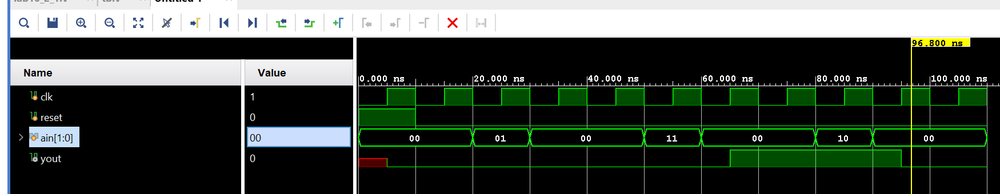
Mealy FSM Using ROM
A Mealy sequential machine can also be implemented using ROM memory as shown below. The ROM memory holds the next state and output content. The external inputs and the current state form the address input to the ROM. The ROM typically is implemented using LUTs instead of BlockRAM since LUTs give a better utilization ratio resulting from a smaller number of states in a design.
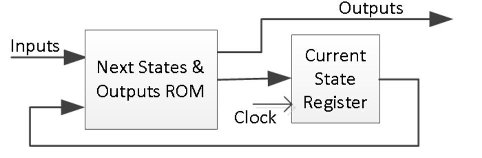
Part10-3-1
Design a specific counts counter (counting sequence listed below) using ROM to develop a Mealy state machine. Develop a testbench and verify the model through behavioral simulation. The counting sequence will be: 000, 001, 011, 101, 111, 010 (repeat) 000, …
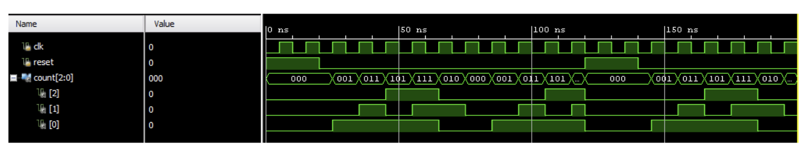
lab10_3_1.v
module specific_counter_mealy (
input clk, // Clock signal
input reset, // Reset signal
input enable, // Enable signal for counting
output [2:0] out // Output representing the current count
);
// ROM storage for state transitions based on the current state
// Since the sequence has 6 unique states, use a 3-bit representation
reg [2:0] state_rom[0:5]; // 6 states, represented by 3 bits each
reg [2:0] state; // Current state
reg [2:0] next_state; // Next state
// Initialize the ROM with the specific counting sequence
initial begin
state_rom[0] = 3'b000; // First state
state_rom[1] = 3'b001; // Second state
state_rom[2] = 3'b011; // Third state
state_rom[3] = 3'b101; // Fourth state
state_rom[4] = 3'b111; // Fifth state
state_rom[5] = 3'b010; // Sixth state (leads back to the first state)
end
// Sequential logic for updating the state at every clock cycle
always @(posedge clk or posedge reset) begin
if (reset)
state <= 3'b000; // Reset to initial state
else if (enable)
state <= next_state; // Move to next state if enabled
end
// Combinational logic for determining the next state
always @(*) begin
case (state)
3'b000: next_state = state_rom[1]; // From state 000 to 001
3'b001: next_state = state_rom[2]; // From state 001 to 011
3'b011: next_state = state_rom[3]; // From state 011 to 101
3'b101: next_state = state_rom[4]; // From state 101 to 111
3'b111: next_state = state_rom[5]; // From state 111 to 010
3'b010: next_state = state_rom[0]; // From state 010 back to 000
default: next_state = 3'b000; // Default back to 000
endcase
end
// Output logic (since this is a Mealy machine, output could depend on the current state and input, but here it's simply the state)
assign out = state;
endmodule
tb.v
module tb_specific_counter_mealy();
reg clk, reset, enable;
wire [2:0] out;
// Instantiate the counter module
specific_counter_mealy uut (
.clk(clk),
.reset(reset),
.enable(enable),
.out(out)
);
// Generate the clock
always #10 clk = ~clk; // 50MHz clock
initial begin
// Initialize inputs
clk = 0;
reset = 1;
enable = 0;
#40; // Reset time
reset = 0;
enable = 1; // Start the counter
// Monitor the output
#600; // Run long enough to see a repeating sequence
$finish;
end
initial begin
$monitor("Time=%t | state=%b", $time, out);
end
endmodule
We can run a Simulation to check the code by clicking the Run Simulation under SIMULATION and choosing the first Run Behavioral Simulation.
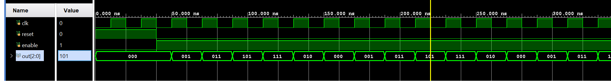
Conclusion
In this lab, you learned Mealy and Moore state machine modeling methodologies. You designed and implemented a sequence detector, a sequence generator, and code converters using the two and three always blocks styles.